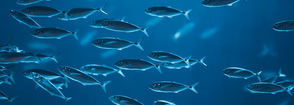
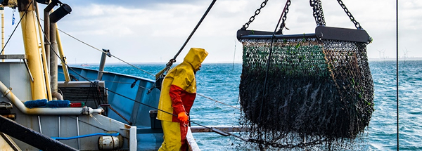
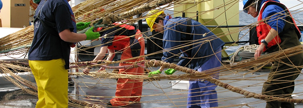
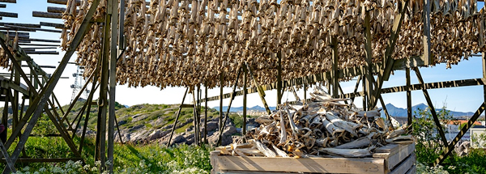

FISHERY BUSINESS수산사업
오대양을 누비는 도전정신으로
세계의 식탁을 채웁니다
FISHERY BUSINESS
사조대림의 수산사업- #수산부분
- #글로벌선단
- #지속가능한 어업
사조대림의 사업영역은 크게 수산부문, 식품 제조부문, 식품 물류 및 유통부문 세 가지로 나눌 수 있습니다.
1960년대 연근해 어업을 시작한 사조대림의 역사는 곧 한국 수산업의 역사라 할 수 있습니다. 전 세계 오대양에서 선단을 구성하여 대활약을 펼치던 사조대림 선단은 1977년 200마일 경제수역의 선포로 연안국과 협상에 의한 입어료를 지불하고, 조업하는 방식으로 변경되면서 수산 조업 방식을 대폭 변경하여 참치 독항 선단, 대구 저연승 러시아 연근해 조업의 4개 선단으로 개편 운영 중에 있습니다.
사조대림이 운영하는 선단의 현황은 다음과 같습니다. 참치연승은 중부 태평양의 공해상과 태평양 도서국에서 세계 최대 사조 선단과 협업을 통해 참치류를 어획하고 있으며, 대구저연승은 업계 유일의 대구저연승을 보유해 한-러 정부간 어업 협상에 의한 정부간 쿼터량을 할당 받아 러시아 서베링해 수역에서 어업하고 있습니다.
SAJO GROUP
오대양을 해쳐나가는 진취적인 사조인저희 사조그룹은 단 한 척의 배로 드넓은 오대양을 출항한지 40여년 만에 세계 최다 참치 선단을 보유한 세계적 수산기업으로 성장하였습니다. 사조대림과 사조오양의 편입으로 80여척의 대선단으로 성장한 사조그룹은 참치, 명태, 대구, 돔, 오징어 등 다양한 어종을 어획하고 있습니다. 이제는 국내 선두 수산기업으로 만족하지 않고, 오대양 드넓은 바다에서 세계의 수산강대국들과 당당히 겨루고 있습니다.
OCEAN FLEET
오대양을 누비는 사조의 선단다양한 어법과 풍부한 조업 경험을 기반으로 세계 주요 어장에서 안정적인 수산자원을 확보합니다.

01 Fishery Method
참치연승
주로 적도 부근 태평양, 인도양, 대서양, 남부인도양등에서 횟감용 고급참치를 어획하며, 대부분을 일본으로 수출하여 외화획득에 공헌하고 있습니다.
- 참다랑어
- 눈다랑어
- 황다랑어
- 알바코
- 새치류

02 Fishery Method
참치선망
중서부 태평양 상에서 어군을 탐지하여 부상된 참치 어군 및 유목에 붙은 어군을 2.4km × 0.35Km 가량의 어망으로 다획하고 있으며, 주로 참치 통조림 원료로 공급합니다. 어획한 가다랑어(SKIPJACK)의 대부분은 사조 참치캔 원료로 사용 하고 있으며 황다랑어(YELLOWFIN)는 EU와 아시아 등지로 수출하여 외화획득에 이바지 하고 있습니다.
- 가다랑어
- 황다랑어

03 Fishery Method
트롤
북태평양 연안인 오호츠크 베링, 쿠릴 수역의 러시아 경제수역 내에서 명태 등의 어종을 트롤어법으로 포획합니다. 명태와 명란 대부분을 국내로 반입하여 내수 식용 및 수출 판매 하고 있습니다. 저희 사조 그룹은 오랜 노하우를 바탕으로 어획과 판매 부문에서 안정성을 확보하고 있습니다.
- 명태
- 은연어

04 Fishery Method
대구저연승
북태평양 연안인 오호츠크 베링, 쿠릴 수역의 러시아 경제수역 내에서 대구 등의 어종을 저연승어법으로 포획합니다. 저희 사조 그룹은 오랜 노하우를 바탕으로 어획과 판매 부문에서 안정성을 확보하고 있습니다.
- 가다랑어
- 황다랑어